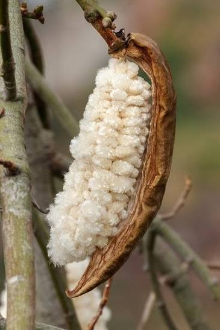
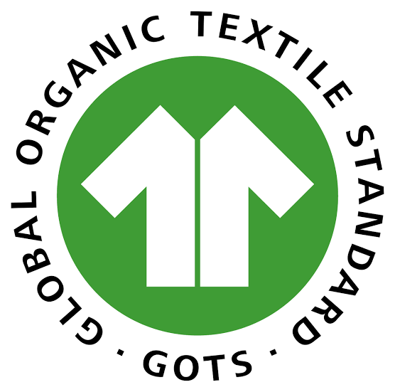

Reclaiming What Industrial Agriculture Forgot
Modern mass production severed the sacred connection between human wellness and the soil beneath our feet. Vegetables stripped of minerals, soaps loaded with synthetic detergents, and grains bleached of life.
We founded Purreins Frequency to prove there is another way: where ducks graze freely along wetland reeds, whole herbs thrive on rich natural compost, and handcrafted curd soap cured patiently over 6 weeks provides pure nourishment to human skin.


Ilavam Panju (Silk Cotton) — Harvested from Tamizhnad
Our raw Ilavam Panju (silk cotton) is harvested from Tamizhnad directly from natural silk cotton pods. It fills our heirloom quilts with buoyant, breathable warmth—paired with a handcrafted weave of organic cotton thread yarns, handcrafted tote carry bags, and 100% eco-friendly labels with NO PLASTIC.

Crafted from GOTS & OEKO-TEX® Certified Fabric
Clarification: Our handcrafted quilts and throws themselves are not what are certified—it is the organic fabric they are made from that is GOTS certified and OEKO-TEX® Standard 100 certified. Woven from organic cotton thread yarns, organically dyed, finished with all eco-friendly labels (NO PLASTIC), and paired with handcrafted tote carry bags.
No Chemical Fertilization — Duck, Geese & Puppy Poop, Excess Food & Firewood Ash
Zero chemical fertilization ever touches our soil. Every single plant and tree on our farm is nourished exclusively by our own natural farmstead fertilizers: duck, geese, and puppy poop, excess food, firewood ash, and mulched sun-dried leaves.
Fresh Coconut Oil, Farm Curd & Infusions
Crafted strictly with fresh cold-pressed coconut oil, fresh farm-made curd, and farm-grown infusions for the soaps—zero other oils, zero synthetics.
Sun-Dried & Farm-Grown Leaves
Whole sun-dried leaves and fresh harvests nourished by duck, geese, and puppy poop, excess food, and firewood ash: farm-grown banana leaves, moringa, papaya leaves, tulasi, curry leaves, and more.
Dalmatian Farm Guard Puppies
Our Dalmatian farm guard puppies faithfully protect the duck chicks, the white geese and goslings, and the entire farm—while their puppy poop enriches our living soil.
All Eco-Friendly Labels — NO PLASTIC
Our labels are all eco-friendly too — strictly NO PLASTIC. Every soap wrap, cotton twine tie, herbal pouch, label, and handcrafted tote carry bag is 100% plastic-free and biodegradable.
Complete Farmstead Resource Inventory

Ducks Swimming in an Organic Pool
Our free-range White Pekin ducks spend their days swimming and splashing in a clean 12×4 feet tiled organic pool, set right into the earth with lush natural grass and greenery thriving all around it—with zero plastic anywhere.
The nutrient-rich pool water and duck droppings cycle straight back into our soil—powering our banana, moringa, papaya, tulasi, and curry leaf trees with zero chemical fertilizers.


1. Living Soil Permaculture
We nurture fungal mycorrhizae and earthworm biology, producing mineral-rich crops with unmatched vitality.
2. Zero Synthetic Toxins
No synthetic fragrances, parabens, phthalates, glyphosate, or chemical fertilizers. 100% natural.
3. Ethical Free-Roaming White Pekin Ducks
Our White Pekin ducks live naturally in our organic pool and across open grass paddocks, laying nutrient-packed golden eggs.
4. Heirloom Craftsmanship
Hand-pieced cotton quilts and artisan soaps created slowly by experienced craft hands.
5. Closed-Loop Earth Cycle
Eco-friendly plastic-free labels, biodegradable packaging, and solar-curing in complete harmony with the land.